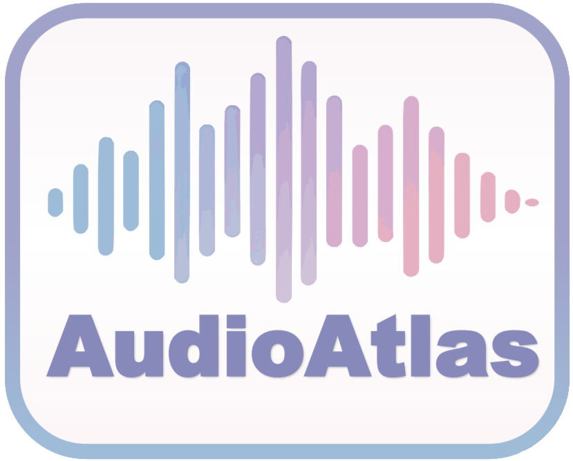

AudioAtlas
A Comprehensive and Balanced Benchmark Towards Movie-Oriented Text-to-Auido Generation
Overview
Recent rapid progress in Text-to-Audio (T2A) models contrasts sharply with the stagnation observed in the evolution of corresponding evaluation benchmarks. Existing benchmarks, such as AudioCaps, suffer from limited diversity and quality, as well as biased category distributions, leading to increasingly questionable reliability in assessing advanced T2A models. We introduce AudioAtlas, a comprehensive and balanced benchmark for movie-oriented text-to-audio generation. AudioAtlas contains 1,165 high-quality and diverse recordings, comprising 276 categories across 16 themes. Built upon a well-structured audio category system-SoundTrace, AudioAtlas provides a more category-balanced and comprehensive benchmark compared to the widely used AudioCaps test set. Furthermore, we provide detailed human annotations covering both temporal and semantic dimensions. the benchmark is available in the repository and is available in the public domain under a Creative Commons Attribution-NonCommercial-ShareAlike 4.0 International License .
- 🧩 Rich Diversity: Based on our proposed SoundTrace, an object-centric audio taxonomy, AudioAtlas comprises 276 sound effect categories grouped into 16 themes, such as Natural Sounds, Animals, Sports, Transport Sounds, Food & Drink, Human Vocal Sounds, and Weapons & Warfare.
- ⚖️ Balanced Category Distribution: AudioAtlas provides a more category-balanced and comprehensive benchmark compared to the widely used AudioCaps test set.
- ⏱️ Fine-Grained Temporal Annotation: AudioAtlas offers fine-grained temporal annotations with a resolution of 0.1 seconds, precisely indicating the onset of each audio event.
- 🧑🔬 Detail-Oriented Annotation: AudioAtlas provides human-annotated overall and event-level captions with rich descriptors (e.g., material, quantity, volume and emotion).
- 🎧 High-Quality Audio: AudioAtlas offers high-quality reference audio recorded with professional-grade equipment at high sampling rates (above 44 kHz), ensuring superior fidelity and acoustic precision.
- 🛠️ Higher-quality evaluation: AudioAtlas facilitates comprehensive evaluation of both temporal coherence and semantic alignment. Compared to previous benchmarks, it provides clearer optimization guidance through its high-quality reference samples, aiming to mitigate the adverse effects of overfitting on low-quality, open-world recordings. Detailed experimental results are provided in the paper.
| Benchmark | Time Stamp |
Category Balance |
Category Coverage |
High Quality |
Caption words / Subcaption words |
|---|---|---|---|---|---|
| AudioCaps | ❌ | ❌ | ❌ | ❌ | 10.30 / - |
| Clotho | ❌ | ❌ | ❌ | ✅ | 11.31 / - |
| AudioSetStrong | ✅ | ❌ | ❌ | ❌ | - / 1.79 |
| T2AGrounding | ✅ | ❌ | ❌ | ❌ | 9.60 / 3.41 |
| AudioCondition | ✅ | ❌ | ❌ | ❌ | 10.96 / 1.79 |
| AudioTime | ✅ | ❌ | ❌ | ❌ | - / 1.79 |
| AudioAtlas | ✅ | ✅ | ✅ | ✅ | 16.28 / 8.37 |
| Overall | Audio Counts & Duration | ||
|---|---|---|---|
| All | Single-Event | Multi-Event | |
| Total audios | 1165 | 749 | 416 |
| Total duration (h) | 3.23 | 2.03 | 1.39 |
| Others | Mean | Max | Min |
| Theme audios | 72.81 | 133 | 17 |
| Category audios | 4.22 | 9 | 1 |
| Audio events | 2.91 | 10 | 1 |
| Audio duration (s) | 9.97 | 20.37 | 0.8 |
| Event duration (s) | 5.36 | 19.92 | 0.14 |
| Overall caption words | 16.28 | 66 | 4 |
| Subcaption words | 8.37 | 26 | 2 |
Construction Pipeline
Object-Centric Audio Category System - SoundTrace
We introduce SoundTrace, an object-centric audio taxonomy designed for semantic retrieval. It organizes 276 fine-grained categories under 16 high-level themes, grounded in distinct acoustic sources to support class consolidation and retrieval. By refining the AudioSet Ontology—removing redundancy, clarifying labels, and clustering related categories—we ensure broad and accurate coverage. Additional classes from AI experts and sound libraries further enhance completeness. SoundTrace is also compatible with UCS, enabling easy integration and scalable benchmark development.
The detailed hierarchical structure of SoundTrace is presented below.
🌲 Natural Sounds
- 🏜️ Desert
- 🔥 Fire
- 🌨️ Hail
- 🌧️ Rain
- ❄️ Snow
- ⛈️ Thunder
- 🌊 Underwater
- 🏞️ Waterfall
- 💨 Wind
- 🍃 Bushes & Grass & Leaves
- 🌳 Tree
- 🏔️ Debris Flow & Avalanche
- 🌐 Earthquake
- 🌪️ Tornado & Typhoon & Storm
- 🌊 Tsunami
- 🏕️ Field & Countryside
- 🌲 Forest & Woods & Jungle
- 🫧 Fumarole & Geyser
- 🌋 Lava & Volcano
- 🪨 Mud Pots
- 🔹 Gravel
- 🪨 Rocks
- 🌊 Ocean
- 🏞️ River & Stream
🐾 Animals
- 🐭 Mouse & Rat
- 🦇 Bat
- 🐻 Bear
- 🐗 Boar
- 🐘 Elephant
- 🦊 Fox
- 🦛 Hippo
- 🦁 Lion
- 🐿️ Squirrel
- 🐯 Tiger
- 🐺 Wolves
- 🐝 Bee & Wasp & Hornet
- 🦗 Cicada
- 🦗 Cricket & Katydid
- 🪰 Fly & Housefly & Mosquito
- 🐱 Cat
- 🐶 Dog
- 🐄 Cattle
- 🐔 Cock & Hen & Chicken
- 🐴 Donkey
- 🐎 Horse
- 🐖 Pig
- 🐐 Sheep & Goat
- 🐦 Crows
- 🦅 Eagles & Vultures
- 🦜 Parrots
- 🕊️ Seagulls
- 🐧 Sparrows & Magpies & Doves
- 🐬 Dolphin
- 🦭 Sea Lion & Seal & Walrus
- 🐋 Whale
- 🐸 Frog
- 🐵 Monkey & Chimpanzee
- 🐍 Snake
🗣️ Human Vocal Sounds
- 😠 Booing
- 👶 Child & Kid & Baby Speech
- 🎼 Chorus & Choral & Choir
- 😭 Crying & Sobbing & Wailing
- 👩 Female Speech
- 😤 Grunting
- 🗯️ Hubbub & Babble Noise & Chatter
- 😂 Laughing
- 👨 Male Speech
- 😩 Moaning
- 👹 Monster Voice
- 🥊 Physical Effort Sounds & Human Battle Sounds
- 😱 Screaming
- 📢 Shouting
- 🎤 Singing
- 🤫 Whispering
🧍♂️ Human Non-Speech Oral Sounds And Others
- 🌬️ Blow
- 😮💨 Breath
- 🤢 Burp
- 😷 Cough
- 💨 Farts
- 🫧 Gargle
- 😧 Gasp
- ❤️ Heartbeat
- 💋 Kiss
- 🚽 Pee
- 😔 Sigh
- 🖐️ Skin
- 🤧 Sneeze
- 👃 Sniff
- 💤 Snore
- 🤮 Spit
- 🤢 Vomit
- 🎵 Whistles
- 🥱 Yawn
- 🍖 Chewing & Biting & Mastication
- 🥤 Drinking
- 😋 Ingestion & Swallow
- 🍜 Slurp & Sip & Suck
🦵 Human Bodily Impact Sounds
- 👏 Clapping
- 💉 Blood Splattering
- 🦴 Bone Cracking
- 🗡️ Stab & Pierce
- 🤏 Cracking Knuckles
- 🫰 Snapping Fingers
- ⌨️ Typing
- 👊 Fight & Punch & Strike & Block
- 🧍 Knock Down & Take Down
- 👣 Footsteps
- 🦘 Jumping
- 🦵 Kick
- 🏃 Run & Sprint & Dash
- 🔊 Stomping
🚗 Transport Sounds
- 🚚 Truck & Bus
- 🚲 Bicycle
- 🚗 Car
- ⛴️ Cruise Ship, Hovercraft & Motorboat & Speedboat & Sailboat
- 🏍️ Motorcycle
- 🚓 Police Car & Ambulance & Fire Truck
- 🚆 Train & Subway & Metro
- 🏁 F1 Car & Rally Car & Off-Road Vehicle
- 🚁 Helicopter
- ✈️ Plane
🌆 Sound Scene Sound
- ✈️ Airport
- 🎢 Amusement Park
- 🍻 Bar & Restaurant
- 🏖️ Beach
- ⛪ Church & Temple
- 🎼 Concert Hall
- 🏗️ Factory & Industry & Construction Noise
- 🏋️ Gym
- 👨🍳 Kitchen
- 💼 Office
- 🎉 Parade & Protest
- 🚓 Prison
- 🏫 School
- 🛍️ Shopping Mall & Market
- 🪐 Space & Universe
- 🏟️ Sports Stadium
- 🚦 Traffic Street & Roadway Noise
- 🚇 Train & Metro & Subway Station
- 🌇 Urban & Public Square
- 💣 Warfare
- 🎰 Casino
💥 Weapons & Warfare
- 🚀 Rocket & Missile
- 🌊 Submarine
- 🛡️ Tank & Armored Vehicle
- 💥 Aircraft Crash
- 🛸 Drone
- 🛩️ Fighter Jet & Fighter Aircraft & Jet & Helicopter
- 🛡️ Armor
- 🏹 Arrow & Bow
- 🔪 Knife & Sword
- 📿 Whip
- 💨 Bullet
- 🔥 Flamethrower
- 🔦 Lasers
- 🔫 Pistol & Revolver
- 🎯 Rifle & Shotgun
- 🎯 Sniper Rifle
- 🧨 Submachine Gun & Machine Gun
- 🔊 Cannon & Grenade Launcher & Mortar
- 🧨 Grenade & Landmine & Bomb
🌐 Channel, Environment And Background
- 🖥️ Computer & Digital & Synthesized Voices
- 🌀 Echo & Reverberation
- 🔊 Loudspeaker & Amplifier
- 📻 Radio & Intercom
🏅 Sports
- 🃏 Cards
- ♟️ Chess
- 🏸 Badminton
- ⚾ Baseball
- 🎱 Billiards
- 🤺 Fencing
- 🏌️ Golf
- 🏓 Table Tennis
- 🎾 Tennis
- 🏀 Basketball
- 🎳 Bowling
- ⚽ Soccer
- 🏐 Volleyball
- 🥊 Boxing
- 🥋 Martial Arts & Wrestling & Judo
- 🤿 Diving
- 🏊 Swimming
- 🎣 Fishing & Parachuting & Rock Climbing
- 🏒 Ice Hockey
- ⛷️ Skiing & Snowboarding & Ice Skating
- 🛹 Skateboarding & Roller Skating
- 🤸 Weightlifting & Floor Exercise & Vault & Trampoline
🍽️ Food & Drink
- 🫗 Pour
- 🍷 Bottle & Wine Glasses
- 🥫 Can
- 🍽️ Plates & Cutlery & Bowl
- 🍳 Pots & Pans
- 🧂 Salt And Pepper Shakers
- 🔪 Chopping Food
- 🔥 Frying & Roasting Food
- 🥔 Mashing Food
- 🍲 Stewing Food
- 🍜 Stir-Frying Food
- 🥣 Stiring & Blending Food
- ☕ Coffee Maker
- 🚿 Dishwasher
- 🫖 Electric Kettle
- 🔥 Grill Pan
- 🧃 Juicer & Blender
- 📡 Microwave Oven
- 🍚 Rice Cooker & Pressure Cooker
- 🍞 Toaster
🏠 Domestic Sounds, Home Sounds
- 🛍️ Bags
- ⏰ Clocks
- 🪙 Coin
- 📿 Jewelry & Bracelets
- 🔑 Keys
- 🧳 Luggage
- 🌂 Umbrella
- 🪡 Zipper
- 🚨 Alarm
- ❄️ Air Conditioning
- 🧼 Cleaner
- 🪒 Electric Shaver
- 🌀 Fan
- 💈 Hair Dryer
- 📺 Television & Projector
- 🛁 Bathtub & Sink
- 🧽 Brush
- 🚿 Shower
- 🚽 Toilet Flush
- 🪥 Toothbrush
- 🚪 Cupboard
- 🚪 Doors
- 🗄️ Drawers
- 🛋️ Furniture
- 🔒 Lock
- 🪟 Windows
🛠️ Non-Electronic Tools
- 🔔 Bells
- 🎆 Fireworks
- ⚙️ Gears
- 🎈 Inflator
- 🔥 Match
- 🪢 Rope
- 🎗️ Seatbelt
- 🧴 Spraying Can
- 📼 Tape
- 📏 Tape Measure
🏢 Office And Learning Sounds
- 📖 Book
- 📷 Camera
- 💻 Computer
- 🖱️ Mouse
- 🖨️ Printer
- 📎 Stapler
- 📞 Telephone
🛠️ Processed Tools
- 🪓 Axe & Hammer
- 🛞 Drill & Cutter
- 🪚 Hacksaw & Saw
- 🌾 Lawn Mower
- ✂️ Metal Scissors
- 🔫 Nail Gun
- 🧲 Pulleys & Roller
- 🫧 Pump & Bellow
- 🧽 Sanding
- 🧵 Sewing Machine
- 🔘 Switch
🧱 Materials Sounds
- 🛏️ Blanket
- 🏺 Ceramics
- 🪁 Cloth & Ship Sail & Parachute
- ⚡ Electricity
- 🧊 Glass
- ❄️ Ice
- 👞 Leather
- 💧 Liquid & Mud
- 🔩 Metal
- 🧵 Nylon
- 📄 Paper
- 🧴 Plastic
- 🎈 Rubber
- 🧽 Sponge
- 🪵 Wood
Sematic Vector Database Construction
Following the SoundTrace taxonomy, we construct a semantic vector database using high-quality recordings from Artlist and AudioStock, both curated for media production with consistent textual descriptions. Each description is encoded into a 768-dimensional vector using a pretrained Sentence-Transformers model, serving as the semantic key. These embeddings are indexed with txtai for efficient retrieval and stored in an SQL backend to support scalable querying.
Human Selection and Annotation
For each category, we retrieve 500 diverse candidate samples and apply a two-stage manual refinement. First, five representative clips—three single-event and two multi-event—are selected based on semantic relevance, audio quality, absence of artifacts, and intra-class diversity. For instance, in the “revolver” category, selected clips include loading, rotating the cylinder, and firing. Second, 10-second segments of each clip are annotated with detailed global and local captions, covering subject details, actions with onomatopoeia, and acoustic modifiers such as emotion, frequency, and volume. Each event is also temporally aligned with its onset timestamp.
Annotation Examples
⚠️ Note: Please wait a moment for the audio to load before playback.
⚠️ Note: The following content constitutes the appendix of the paper and is intended to be read after reviewing the paper.
Appendix
A Supplementary Experimental Details
A.1 Text-to-Audio Generation
Training Dateset Details. The training set for Tango-Full includes AudioCaps, WavCaps, UrbanSound, Musical Instrument, MusicCaps, GTZAN, and ESC. All audio clips longer than 10 seconds are segmented into 10-second chunks and resampled to 16kHz. The training set for AudioLDM-Full further includes Adobe Foley, Clotho, FreeSound50K, TUT, DCASE2023 Task 7. We use GPT-4 to convert raw textual descriptions into full captions for uncaptioned samples. In addition, we apply stricter data cleaning procedures: for long recordings, only the first 30 seconds are retained, and samples are filtered using CLAP, retaining only those with a similarity score above 0.4.
A.2 Temporally Controllable Text-to-Audio Generation
Fusion Rate Ablation in CRD. As shown in the Tab. 6, when the fusion step is set to 1.0, temporal controllability (measured by S-CLAP and S-CIDEr) and semantic alignment (measured by CLAP) are lower compared to fusion steps of 0.75 or 0.5. This is likely due to semantic suppression in overlapping regions. As the fusion step decreases, such suppression is reduced, leading to improvements in both temporal and overall performance. However, when the fusion step becomes too low, the number of denoising steps involving region-wise cross-attention is insufficient. This results in content blending within overlapping regions and a lack of global stylistic coherence, ultimately degrading audio quality (FAD) and semantic alignment.
Table 6: Ablation Study on Fusion Rate r in CRD
| Fusion Rate | Overall | Temporal | ||
|---|---|---|---|---|
| CLAP↑ | FAD↓ | S-CLAP↑ | S-CIDER↑ | |
| 1 | 0.49 | 1.96 | 0.41 | 0.20 |
| 0.75 | 0.50 | 1.75 | 0.42 | 0.21 |
| 0.5 | 0.51 | 2.09 | 0.43 | 0.21 |
| 0.25 | 0.47 | 2.31 | 0.40 | 0.20 |
Qualitative comparison. As shown in Fig. 3, we present qualitative comparison examples of temporally controllable text-to-audio generation methods. As previously discussed, training-free approaches, including DC, CRD, and MD, demonstrate significantly better temporal controllability than Make2, since Make2 only receives coarse subprompt position cues in the form of pairs like <A cat meows \& start> or <A cat meows \& mid>. Moreover, Make2 also struggles with controlling the number of sound occurrences over time, resulting in mismatches between prompt timing and actual sound placement. As shown in Fig. 3 line 4, the A cat meows event occurs only once, and its timing does not align with the reference. Among the training-free methods, MD produces strong noise in overlapping regions, with low fidelity and little discernible content. The boxed overlap regions in Fig. 3 line 3 display that spectrogram is dominated by random noise patterns. In contrast, CRD better preserves clarity, but sometimes shows semantic suppression in overlapping segments. For instance, in the example of Fig. 3 line 2 shown, the A cat meows sound dominates the overlap region, suppressing the presence of the crickets chirp. As a result, the crickets chirp sound appears fragmented and inconsistent in the overlap regions. DC, Fig. 3 line 1, which simply concatenates independently generated regions, avoids this issue due to the complete isolation of subprompts during generation. In the overlap regions, spectrograms of both sound events are clearly distinguishable.

Figure 3: Qualitative comparison result of temporally controllable Text-to-Audio methods. Boxed regions indicate the occurrence of the event A cat meows. Box: correct timing and audio content; Box: semantic suppression; Box: noise; Box: temporal misalignment.
However, as illustrated in Fig. 4 line 2, DC lacks a mechanism to enforce global stylistic consistency, resulting in noticeable variations in timbre, background texture, and unnatural transitions between adjacent regions. The spectrograms of adjacent regions exhibit clear discontinuities. In comparison, CRD, Fig. 4 line 1, maintains a unified global style, with smooth spectrogram transitions across regions and a more coherent auditory experience.

Figure 4: Qualitative comparison result of CRD and DC. Box: stylistic inconsistency or unnatural transitions between regions. Event1: Cheers and applause from the crowd; Event2: Booing and shouting from the crowd, along with scattered applause; Event3: A few scattered shouts from men.